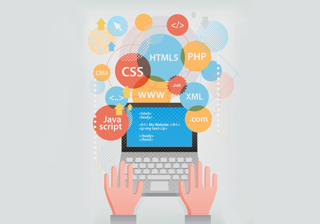
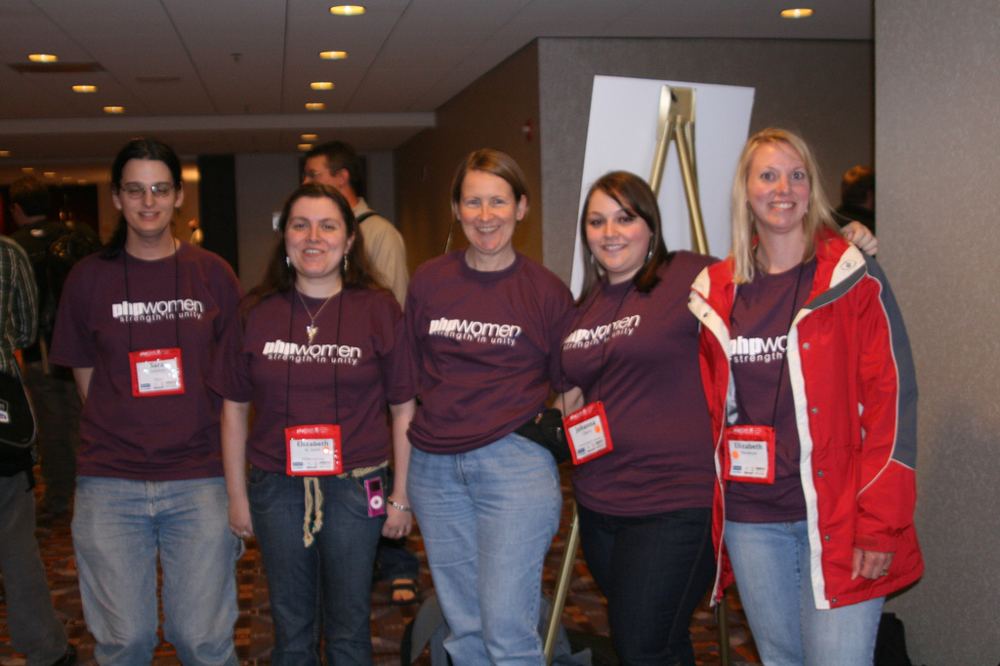
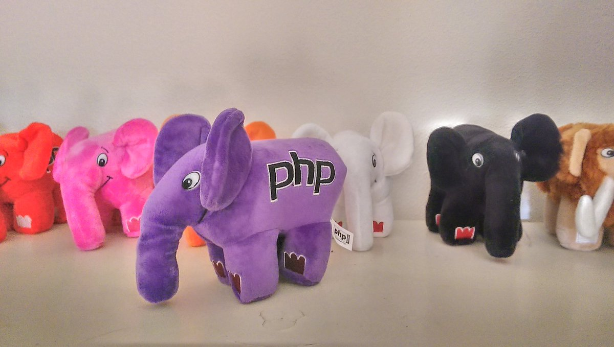
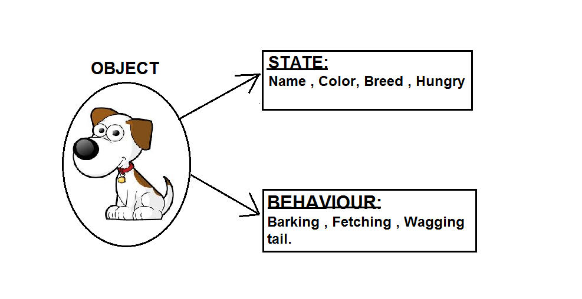
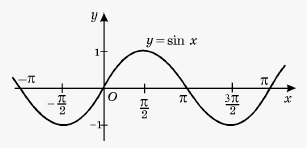

<!DOCTYPE html>
<html lang="cs">
<head>
    <meta charset="utf-8">
    <title>Tvoříme web v PHP</title>
    <link rel="stylesheet" href="css/reveal.css">
    <link rel="stylesheet" href="css/theme/simple.css" id="theme">
    <link rel="stylesheet" href="node_modules/reveal.js/lib/css/zenburn.css">
    <style type="text/css">
        .reveal .slides {
            text-align: left;
        }

        .reveal section img {
            border: none;
            box-shadow: none;
        }

        .slides .header {
            position:absolute;
            top: 0;
            left: -50%;
        }
        .slides .footer {
            position:absolute;
            bottom: 0;
            left: -50%;
        }
    </style>

    <!-- If the query includes 'print-pdf', use the PDF print sheet -->
    <script>
        document.write('<link rel="stylesheet" href="css/print/' + ( window.location.search.match(/print-pdf/gi) ? 'pdf' : 'paper' ) + '.css" type="text/css" media="print">');
    </script>
</head>
<body>

<div class="reveal">
    <div class="slides">
        <section data-markdown data-separator="^\n---\n$">
            <script type="text/template">
                Tvořím web v PHP!
                =================

                Martin Hasoň, Petr Jaša, Martin Mayer
                15\. října 2016

                ---

                Tvorba webových stránek
                -----------------------

                <center></center>

                Note:
                Z celého procesu vývoje webových stránek se dnes budeme užit development a trochu deployment.

                ---

                Technologie při vývoji
                ----------------------

                <center></center>

                Note:
                Ze všech možných technologií se dnes zaměříme na PHP.

                ---

                Proč PHP
                --------

                - programovací jazyk určený hlavně pro tvorbu webu,
                - 1994 (PHP - Personal Home Page),
                - "přežil svou smrt",
                - rozšíření,
                - velká poptávka po programátorech
                - http://php.net

                ### Kde ho najdeme
                - Facebook, Wikipedia, Mall, ČSFD
                - Wordpress

                Note:
                Proč potřebujeme programovací jazyk?

                ---

                Kdo vytvořil PHP
                ----------------

                - Rasmus Lerdorf
                - Zeev Suraski
                - Andi Gutmans

                <center>
                
                
                
                </center>

                NOTE:
                Opravdu samí muži?

                ---

                PHP|Women
                ---------

                - Sara Golemon
                - https://phpwomen.org/

                <center></center>

                ---

                elePHPant
                ---------

                - http://www.elephpant.com/
                - https://www.elephpant.cz/

                <center></center>

                Note:
                Maskotem PHP je elePHPant. I u nás ho lze získat.

                ---

                Výhody PHP
                ----------

                - rychlé a snadné použití
                - dobrá podpora webhostingů a rozšířenost
                - velká komunita, hodně článků, návodů
                - neustále se pracuje na jeho vylepšování
                - poptávka po PHP vývojářích

                ---

                Nevýhody PHP
                ------------

                - nekonzistence v chování funkcí
                - začátečník rychle sklouzne ke špatnému kódu
                - s každým spuštěním se celý kód vyhodnocuje znovu

                ---

                Jak fungují webové stránky
                --------------------------

                <center></center>

                Note:
                Je to o komunikaci. Děti z Bullerbynu.

                ---

                Klient - server
                ---------------

                <center></center>

                Note:
                Kde tedy je PHP? Podíváme se na debugovací nástroje v prohlížeči u stránky http://php.net

                ---

                Jak to popsat - objekty
                -----------------------

                <center></center>

                Note:
                Zkusme jmenovat další objekty, jejich vlastnosti a chování.

                ---

                Jak to popsat - funkce
                ----------------------

                - $f(x) = sin(x)$
                - $y = sin(x)$ <!-- .element: class="fragment" -->

                ```php
                <?php
                $x = M_PI/2;
                $y = sin($x);

                print_r($y);
                ```
                <!-- .element: class="fragment" -->

                <center></center>
                <!-- .element: class="fragment" -->

                - vezmi(), seřad(), zvaž(), dej() <!-- .element: class="fragment" -->

                Note:
                Zkusme jmenovat další funkce. Rozdíl mezi prvním a druhým zápisem.

                ---

                Jak to popsat - program
                -----------------------

                Do hrnce dej oškrabané brambory, zalij je vodou a přidej sůl a kmín. Začni vařit.
                Až jsou brambory chutné, vypni vařič. Vodu z hrnce vylej. <!-- .element: class="fragment" -->

                ### Objektově <!-- .element: class="fragment" -->
                Maminko, uvař prosím brambory. <!-- .element: class="fragment" -->

                ```php
                <?php
                $mom = new Mother();
                $potatoes = new Collection(new Potato(), new Potato(), new Potato());

                $mom->cook($potatoes);
                ```
                <!-- .element: class="fragment" -->

                Note: Znáte nějaký popis, jednoduchý program? Recept. A objekt, který tohle všechno udělá?

                ---

                Jednoduchý příklad - datum
                --------------------------

                ```php
                <?php
                $today = new DateTime();

                print_r($today);
                ```

                ```php
                <?php
                $today = new DateTime();
                $tomorrow = $today->modify('+1 day');

                print_r($tomorrow);
                ```
                <!-- .element: class="fragment" -->

                ```php
                <?php
                $valentine = new DateTime('2016-02-14');

                print_r($valentine->modify('+ 15 days'));
                ```
                <!-- .element: class="fragment" -->

                ```php
                <?php
                $birthday = new DateTime('1984-06-04');
                $today = new DateTime();

                print_r($today->diff($birthday));
                ```
                <!-- .element: class="fragment" -->

                Note:
                Maminku v PHP nemáme, ale podobné divy umí objekt pro datum.

            </script>
        </section>
    </div>
</div>
<script src="node_modules/reveal.js/lib/js/head.min.js"></script>
<script src="node_modules/reveal.js/js/reveal.js"></script>

<script>
    function extend() {
        var target = {};
        for (var i = 0; i < arguments.length; i++) {
            var source = arguments[i];
            for (var key in source) {
                if (source.hasOwnProperty(key)) {
                    target[key] = source[key];
                }
            }
        }
        return target;
    }

    // Optional libraries used to extend on reveal.js
    var deps = [
        {
            src: 'node_modules/reveal.js/lib/js/classList.js', condition: function () {
            return !document.body.classList;
        }
        },
        {
            src: 'node_modules/reveal.js/plugin/markdown/marked.js', condition: function () {
            return !!document.querySelector('[data-markdown]');
        }
        },
        {
            src: 'node_modules/reveal.js/plugin/markdown/markdown.js', condition: function () {
            return !!document.querySelector('[data-markdown]');
        }
        },
        {
            src: 'node_modules/reveal.js/plugin/highlight/highlight.js', async: true, callback: function () {
            hljs.initHighlightingOnLoad();
        }
        },
        {
            src: 'node_modules/reveal.js/plugin/notes/notes.js', async: true, condition: function () {
            return !!document.body.classList;
        }
        },
        {src: 'node_modules/reveal.js/plugin/math/math.js', async: true},
        {src: 'node_modules/reveal.js-menu/menu.js', async: true}
    ];

    var queryOptions = Reveal.getQueryHash() || {};

    var options = {
        controls: false,
        progress: true,
        history: true,
        center: false,
        fragments: true,
        transition: "none",
        math: {
            mathjax: 'https://cdn.mathjax.org/mathjax/latest/MathJax.js',
            config: 'TeX-AMS_HTML-full'  // See http://docs.mathjax.org/en/latest/config-files.html
        },
        dependencies: deps,
        showNotes: true
    };

    Reveal.initialize(extend(options, queryOptions));
</script>
</body>
</html>
